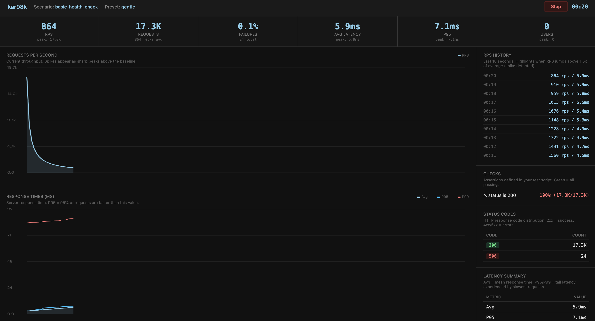

빠르게 시작할 수 있는 3가지 프리셋이 준비되어 있습니다. kar quickstart gentle <url> 한 줄이면 바로 돌아갑니다.
kar98k
Go · HTTP/1.1, HTTP/2, gRPC · MIT License ·
서버에 현실적인 트래픽을 쏴볼 수 있는 24/7 트래픽 시뮬레이션 및 성능 테스트 SDK입니다. k6나 wrk처럼 일정한 부하를 넣는 게 아니라, 실제 서비스에서 발생하는 불규칙한 패턴을 수학적으로 재현합니다.
실제 트래픽은 선형으로 증가하지 않습니다. 갑자기 몰렸다 빠지고, 시간대마다 다르고, 항상 미세한 떨림이 있습니다. kar98k는 Poisson 분포 스파이크, 시간대별 변동, 미세 노이즈를 조합해서 이런 현실적인 패턴을 재현합니다.
대규모 트래픽 환경을 직접 경험해보지 못한 개발자들에게도, 현실과 유사한 부하 환경에서 시스템을 다뤄보며 성장할 수 있는 기회를 제공하고 싶었습니다.
핵심 기능
Poisson 스파이크
통계적으로 현실적인 트래픽 급증을 생성합니다. 스파이크 빈도, 강도, ramp-up/down 시간을 모두 설정할 수 있습니다.
시간대별 스케줄링
업무 시간에는 1.5배, 새벽에는 0.3배 같은 시간대별 가중치를 설정해서 하루 단위 트래픽 흐름을 재현합니다.
미세 변동 (Noise)
기준 TPS 주변으로 ±N% 노이즈를 주입합니다. 실제 트래픽처럼 항상 약간의 떨림이 있는 상태를 만듭니다.
적응형 TPS 탐색
이진 탐색으로 서버가 버틸 수 있는 최대 TPS를 자동으로 찾아냅니다. P95 레이턴시와 에러율 기준으로 판단합니다.
인터랙티브 TUI
Bubbletea 기반 TUI에서 설정부터 실행까지 단계별로 진행할 수 있습니다. Headless 모드로 YAML 설정 파일 기반 실행도 됩니다.
Prometheus 메트릭
:9090/metrics 엔드포인트에서 요청 수, 레이턴시, 현재/목표 TPS, 스파이크 활성 여부를 실시간으로 수집합니다.
프리셋
| 프리셋 | 스파이크 주기 | 강도 | 노이즈 |
|---|---|---|---|
| gentle | ~5분마다 | 1.5x | ±5% |
| moderate | ~3분마다 | 2.0x | ±10% |
| aggressive | ~2분마다 | 3.0x | ±15% |
프로토콜 지원
HTTP/1.1, HTTP/2, gRPC 세 가지 ��로토콜을 지원합니다. REST API 서버든 gRPC 마이크로서비스든 동일한 방식으로 테스트할 수 있습니다.
폴리글랏 스크립트 엔진
kar script 명령으로 코드 기반 부하 테스트를 작성할 수 있습니다.
Starlark(.star), JavaScript(.js)를 내장 지원하고, JSON-line 프로토콜을 통해 Python, Ruby, Lua 등 어떤 언어로든 테스트 스크립트를 작성할 수 있습니다.
다른 성능 테스트 도구들과 다른 점은, kar98k의 chaos 패턴을 스크립트 안에서 일급 API로 사용할 수 있다는 것입니다.
chaos(preset = "aggressive") 한 줄이면 Poisson 스파이크가 VU 스케줄에 자동 적용됩니다.
Starlark / JavaScript
내장 런타임으로 바로 실행. scenario(), http.get(), check(), sleep() 등 친숙한 API를 제공합니다.
External Process Protocol
Python, Ruby, Lua 등 외부 언어를 JSON-line 프로토콜로 연결. 어떤 언어든 성능 테스트 코드로 쓸 수 있습니다.
chaos() API
kar98k 고유의 카오스 패턴을 스크립트에서 직접 호출. 프리셋 또는 커스텀 spike_factor로 비정형 부하를 생성합니다.
VU 라이프사이클
setup/teardown, ramp stages, checks, thresholds를 지원. P95 레이턴시 임계값 기반 자동 판정까지 제공합니다.
아키텍처
Pulse-Controller (스케줄러)
→ Pattern-Engine (Poisson + Noise 알고리즘)
→ Pulse-Worker (고루틴 풀) → Target (HTTP/gRPC)
→ Health-Checker (메트릭 수집)
→ Pattern-Engine (Poisson + Noise 알고리즘)
→ Pulse-Worker (고루틴 풀) → Target (HTTP/gRPC)
→ Health-Checker (메트릭 수집)
스케줄러가 패턴 엔진에 현재 시점의 목표 TPS를 요청하면, 엔진이 Poisson 분포와 노이즈를 적용해서 실제 발사량을 계산합니다. 워커 풀이 고루틴으로 요청을 병렬 발사하고, 헬스 체커가 메트릭을 실시간으로 수집합니다.
실행 방법
Docker로 바로 실행하거나 (ghcr.io/rlaope/kar98k:latest), 바이너리를 직접 다운받아 쓸 수 있습니다.
darwin-arm64, darwin-amd64, linux-amd64, linux-arm64 바이너리를 제공합니다.
수동 스파이크 주입 (kar spike --factor 5), 일시정지/재개, 실시간 로그 테일링도 지원합니다.



$ kar quickstart aggressive http://localhost:8080/api kar98k v0.4.0 — 24/7 chaos traffic simulator Target: http://localhost:8080/api Preset: aggressive (spike ~2min, 3.0x, ±15% noise) Base TPS: 100 ▶ Running... TPS: 142 → 312 (spike!) → 98 Sent: 24,891 Errors: 0 P95: 42ms P99: 87ms $ kar discover http://localhost:8080/api --target-p95 100ms Searching max TPS... 500→750→625→680→660 Result: max sustainable TPS = 660 (P95: 94ms, error: 0%)
test.star — Starlark script example
scenario( name = "checkout-flow", pattern = chaos(preset = "aggressive", spike_factor = 3.0), vus = ramp([stage("30s", 20), stage("1m", 50)]), thresholds = {"http_req_duration{p95}": "< 500ms"}, ) def default(data): resp = http.get("http://localhost:8080/health") check(resp, {"status 200": lambda r: r.status == 200}) sleep(think_time("1s", "3s"))